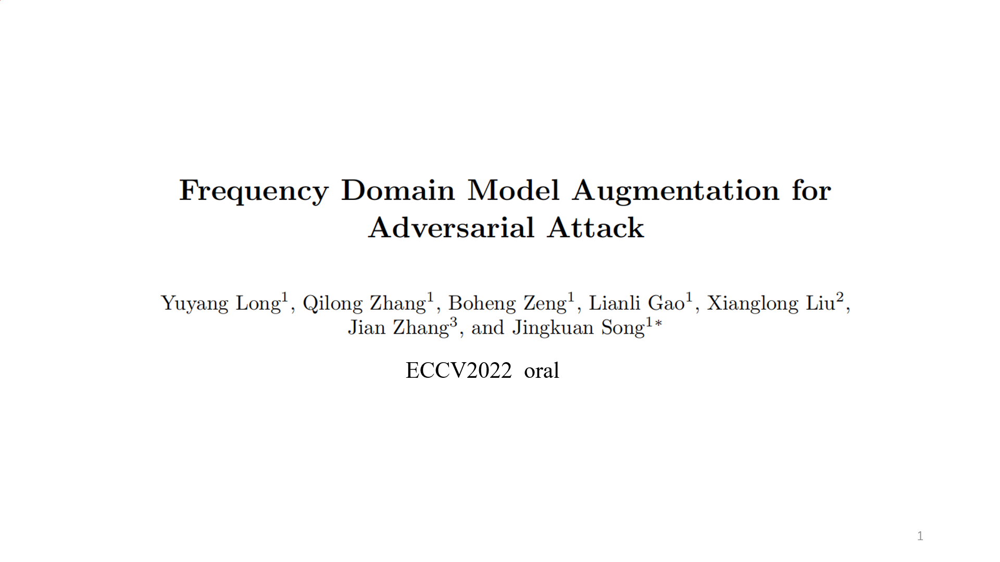

Speaker: Yuyang Long
Topic: Frequency Domain Model Augmentation for Adversarial Attack
Abstract: For black-box attacks, the gap between the substitute model and the victim model is usually large, which manifests as a weak attack performance. Motivated by the observation that the transferability of adversarial examples can be improved by attacking diverse models simultaneously, model augmentation methods which simulate different models by using transformed images are proposed. However, existing transformations for spatial domain do not translate to significantly diverse augmented models. To tackle this issue, we propose a novel spectrum simulation attack to craft more transferable adversarial examples against both normally trained and defense models.
Date: Aug 5, 2022
Materials: PPT &
Video